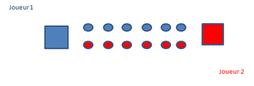
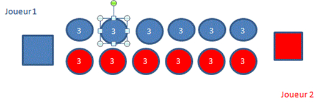
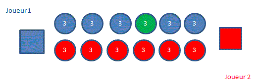
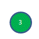
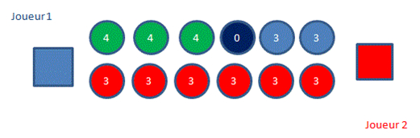
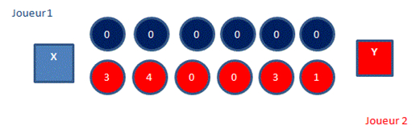
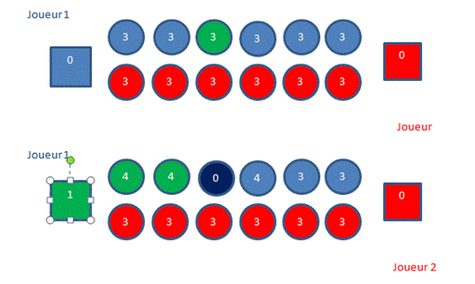
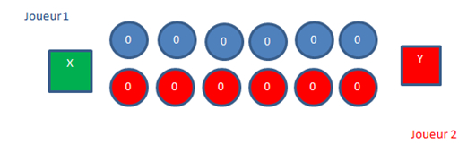

Le jeu du Kalaha est un jeu qui se joue à deux.
Le jeu se joue dans le sens inverse d’une aiguille d’une montre.
Le jeu est représenté comme ceci :
LDans chaque trou( )se trouve à l’intérieur 3 jetons.
Le but du jeu est de mettre le plus de jetons dans son magasin.
Tour 0 :
Au début de la partie, le joueur 1 peut commencer ou non.
Tour 1, le joueur 1 commence. Il prend dans n’importe quel trou tous les jetons. Il les repartit dans les trous qui suivent.
Exemple :
 : Sélection du trou.
On repartit vers la gauche les jetons. On dépose un jeton dans chaque trou. Ici cela donne :
C’est au tour du joueur 2 de jouer. Chaque joueur joue à tour de rôle sauf si le joueur qui doit jouer ne peut pas jouer.
Exemple :
Dans ce cas-là, le joueur 1 ne peut pas jouer car il n’a plus de boutons à répartir.
Ensuite, si le joueur a déposé dans son magasin le dernier jeton qu’il a réparti alors il peut rejouer. Exemple : 
Dans ce cas-là le joueur 1 rejoue.
Le jeu est terminé lorsqu’il n’y a plus de jetons à repartir.
Exemple :
Il existe 3 cas pour désigner le vainqueur :
Si X>Y alors le joueur 1 gagne.
Si Y>X alors le joueur 2 gagne
Si X=Y alors il y a match nul.